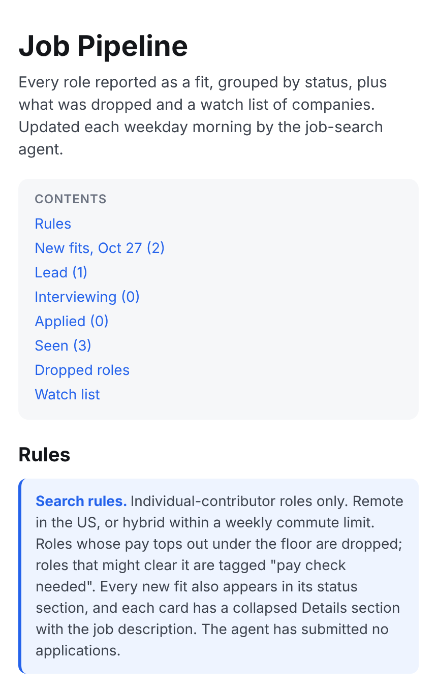
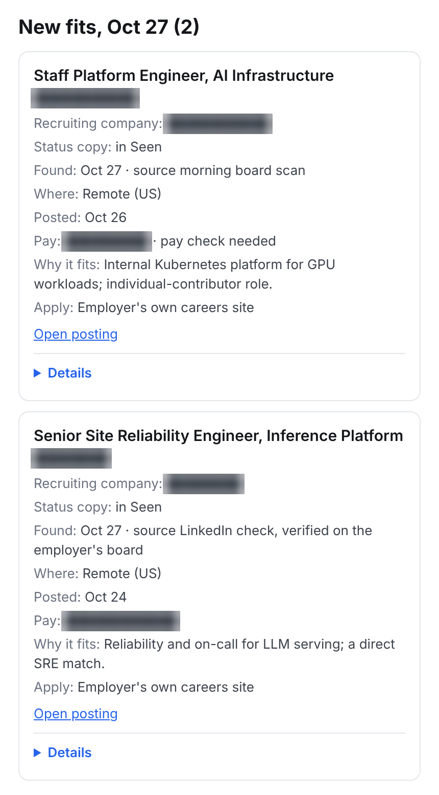
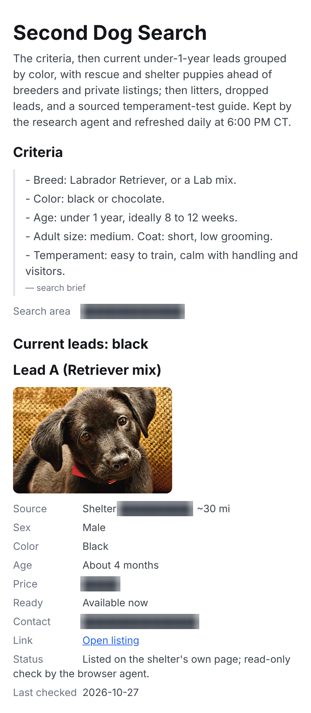
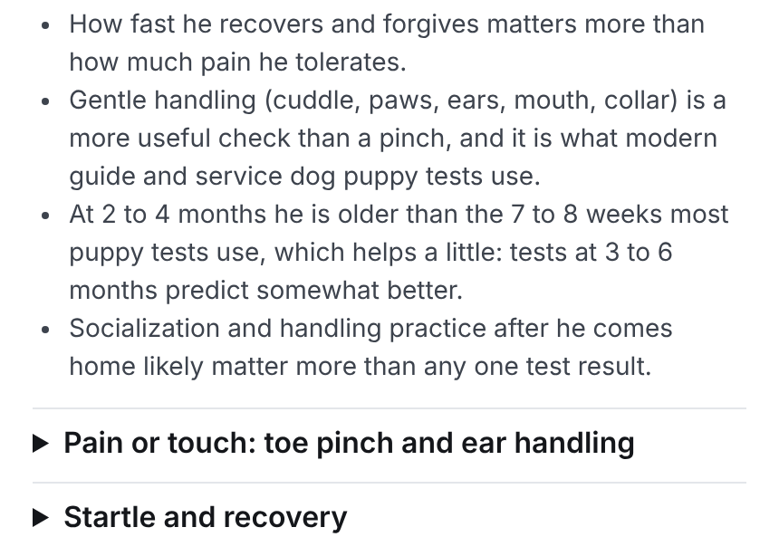

Sam Beckwith III
Senior Site Reliability Engineer & AI Engineer
I build AI agents that keep working when models fail.
I designed and built everything on this page. Each system is tested before it ships, asks a person before anything leaves it, and recovers on its own when a model, a website, or a service fails.
- 20+ AI agentsin one system, in daily use
- Tens of thousandsof context compactions with a coding agent still on task
- About 50 BDD featuresgate every deploy of the shop assistant
AI shop assistant and build tracker
A shop crew keeps posting from their phones as they always have, and every build's record stays complete.
Slack → signed webhook → Cloudflare Worker → queue → AI readers on Workers AI → D1 database and R2 file storage → phone-first web board.
Why it exists
- A custom vehicle build shop ran builds that last months or years on a spreadsheet, a whiteboard, a daily status doc retyped by hand, and a group text. Nothing could be searched or totaled, and receipts, parts, and labor were hard to tie to the right build.
- One system replaces all four. The crew posts texts, photos, receipts, PDFs, and voice notes in Slack, and the assistant files each one to the right build. Leaders get a live board instead of a retyped document. The shop owns every account and the code.
What it does
- Files posts to the right build. A reaction on each post shows its state: received, filed, needs a fix, or answered. When the build is unclear or a post looks like a duplicate, it asks instead of guessing.
- Reads receipts it can trust. Several vision models read each receipt in parallel, each field is decided by majority vote, and the arithmetic is checked. Mismatched totals, duplicate invoices, parts already on another build, and unusual prices go to a person.
- Turns voice notes into text inside the shop's own cloud account, with a backup model.
- Catches duplicates in any format. A photo, a PDF, and a typed note about one receipt are compared on what they say.
- Takes corrections in plain words. "Move the water pump to the other truck" moves the records, and "undo" moves them back. Invoiced records never move.
- Tracks labor safely. It never edits invoiced hours, never deletes, and sends the shop leader a daily labor report. Invoicing stays in the shop's accounting software.
- Gives a phone-first web view: a board by build stage that mirrors the old status doc, build pages with tasks, parts, receipts, and photos, and a print page. Sign-in is Slack plus a passkey, with role-based permissions.
Key decisions
- Every write is idempotent, logged, and undoable. Nothing is hard-deleted.
- A watchdog resends any post that stalls, then alerts a person. A catch-up sweep after each deploy finds anything missed.
- Every deploy runs the full test suite, checks migrations and schema, smoke-tests health, and rolls back automatically on failure.
- Nightly backups, point-in-time restore, and a monthly restore drill.
Numbers
- About 50 BDD feature files, each behavior with a passing and a failing case.
- Full test gate in about 90 seconds.
- Designed to run on Cloudflare's $5-a-month Workers plan.
- Cloudflare Workers
- D1
- R2
- Queues
- Workers AI
- Slack API
- Cucumber BDD
Limits: running as a staging pilot with sample data; not yet in production.
Multi-agent personal operations system
A team of AI agents runs a household's daily operations, and a person approves anything that goes out.
Router agent → specialist agents (chief of staff, research, tasks, email, notes, browser, job search) → shared report files → 7 AM briefing.
Key decisions
- Routing rules send each request to one specialist agent, and scheduled routines run without a prompt.
- Human approval is required before any email, message, or post is sent.
- A queued, lock-protected browser-automation agent (Python, Chrome DevTools Protocol, automated tests) handles sites with no API.
- A public job-board poller (Greenhouse, Lever, Ashby, Workday) and weather and nutrition pipelines retry and check themselves.
Numbers
- More than 20 specialized agents, plus a daily 7 AM briefing on email, calendar, tasks, orders, weather, and job matches.
- Python
- Chrome DevTools Protocol
- browser-use
- Scheduled routines
Limits: built for one household. Outgoing messages always wait for a person, by design.
pi-toolbag: CTX long-horizon focus and LLM failover for coding agents
Coding agents that stay on task for the long haul and keep working when a model provider fails.
Extensions for the Pi coding agent: CTX rebuilds working context after each compaction, and a shared failover library replays failed requests on the next model.
Key decisions
- CTX keeps a coding agent focused through tens of thousands of context compactions without stopping it from useful exploration. It rebuilds context from typed records within a fixed token budget, with no extra model call.
- Project rules are shared across sessions only after an explicit bind that a person confirms, so an agent's passing notes never become rules on their own.
- Same-session failover switches on quota, timeout, safety errors, and stalled streams, and never on auth errors or refusals. No user action is needed.
- Usage-cap gates switch away before a model hits its limit and switch back once usage recovers.
Numbers
- Tens of thousands of compactions with the agent still on task.
- TypeScript
- Pi coding agent
- Vitest
- BDD
Limits: built for the Pi coding agent. CTX uses typed records, not embeddings or similarity search.
AI job-search pipeline
Every weekday morning, the right roles show up already filtered and sorted by status.


Scheduled agent → job-board APIs and careers-site readers → filter rules → status-grouped web page. Blocked sites → browser agent.
Key decisions
- Filters by level, individual-contributor track, location, and pay, and shows why each dropped role was dropped.
- Reads public job feeds directly, and sends only sites that block automation to the browser agent on a home server.
- One mobile-friendly card per role, grouped by status, so the whole search fits on a phone.
- Python
- Greenhouse, Lever, Ashby, Workday APIs
- Browser agent
Limits: some sites block automated reads, so the browser agent or a person still reads those.
AI-assisted puppy search
A daily search across shelters, rescues, and breeders, with an alert when the right dog appears.



Scheduled research agent → shelter, rescue, and breeder sites → priority-ranked photo-card page and alerts. Blocked sites → browser agent.
Key decisions
- Runs every evening and on demand against one written dog profile.
- Ranks rescue and shelter dogs ahead of breeders and private listings, and alerts when a match becomes available.
- Pairs the search with a sourced guide to temperament checks at a visit.
Numbers
- 39 trainer and veterinary-behaviorist sources in the temperament guide.
Limits: it only reads listings. It never contacts a shelter or breeder.
Models I use and how
Coding: xAI's Grok Build coding agent, run through my own sandboxed launcher, and the Pi coding agent with pi-toolbag. When SuperGrok subscription capacity runs out, Pi switches to a backup model automatically.
Receipt reading (Cloudflare Workers AI): Llama 4 Scout 17B, Mistral Small 3.1 24B, and Llama 3.2 11B Vision read each receipt in parallel, and each field is decided by majority vote.
Photo or document? Llama 3.2 11B Vision plus ResNet-50 decide whether an upload is a document to read in full or a photo to describe.
Voice notes: Whisper large-v3-turbo transcribes, with Deepgram Nova-3 as the fallback.
Browser agent: GLM-5.3 Flash by default. On a stall it moves down a chain: DeepSeek V4.1 Flash for read-only jobs, Claude Sonnet 5.5 then Claude Opus 5.5 for normal jobs. DeepSeek takes over a human check if a Claude model refuses it.
Stack
Languages
- Python
- TypeScript / Node.js
- Go
- Bash
AI and agents
- Grok
- Claude
- GPT
- Gemini
- GLM
- Llama
- Workers AI
- Agent orchestration
- Guardrails
Cloud and platform
- Cloudflare Workers, D1, R2, Queues
- AWS EKS
- Kubernetes
- Karpenter
- Terraform
- Kyverno / OPA
Testing and delivery
- BDD / Cucumber
- Vitest
- GitHub Actions
- Auto-rollback deploys
Observability
- Grafana
- Prometheus / Thanos
- SLOs